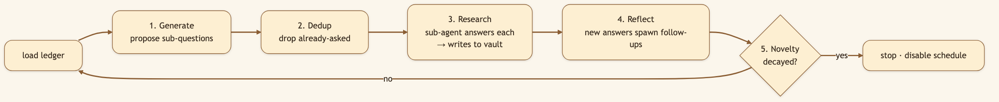
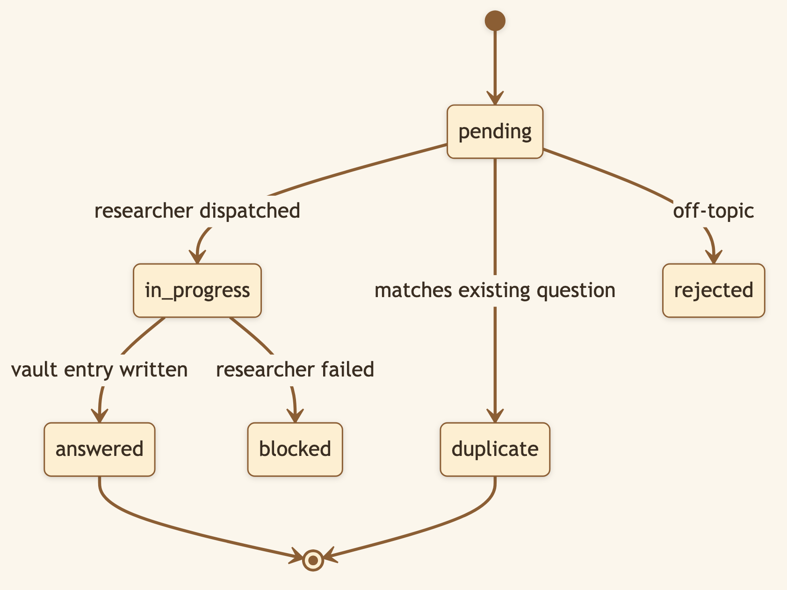
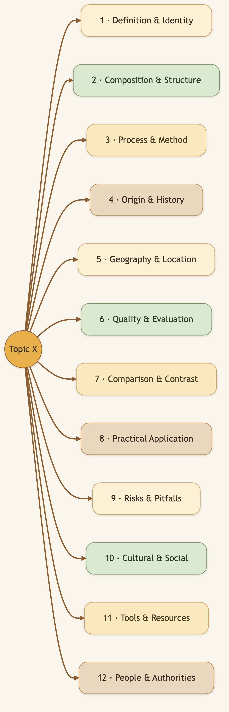
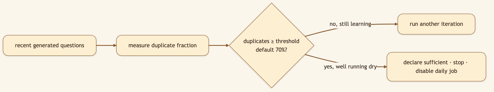

LinkedIn hook (use as the post's first line): "What if you could point an AI at a topic and just… let it learn? Not one query and done — a self-driving loop that keeps asking smarter questions, knows what it already covered, and stops when it stops learning." Audience: LinkedIn → Medium. Researchers, analysts, anyone who's run an agent loop that spun forever and burned the bill.
Deep research is mostly about asking the right sequence of questions and remembering which ones you've already answered. Tedious for a human; chaotic for an LLM left unsupervised. CapyHome's Autoresearch Loop turns it into a disciplined, self-terminating, fully-auditable process — and the thing that keeps it from spinning in circles is a question ledger.
🖼️ [User add: image containing — a rendered ledger.md showing a tree of questions with statuses (answered / duplicate / pending). Capture from a real autoresearch objective's ledger, or mock it as a carousel slide.]
Pick an objective — an entity, a concept, a domain you want CapyHome to master. The loop runs in iterations, each a small cycle of ask → check → research → reflect.

Each survivor question goes to a dedicated vault-source-researcher sub-agent that finds the answer, writes it into the Knowledge Vault, and reports back. Over many iterations the vault fills with structured, cited knowledge — without you typing a single follow-up.
The ledger is a persistent record (JSON + a human-readable markdown mirror) of every question the system has ever considered for an objective. Each question is a node with rich state.

Before researching anything, new questions are checked — by token-similarity and by searching the vault — against everything already in the ledger. Duplicates collapse instead of triggering redundant work. The loop never researches the same thing twice.
Left alone, an LLM asks lopsided questions — ten flavors of "what is X" and nothing about risks or alternatives. The loop forces breadth with a 12-cluster question taxonomy, working breadth-first across three depth levels and deliberately targeting empty or shallow clusters.

The taxonomy lives in the vault as an editable file — reshape what "thorough" means for your domain.

It stops when it stops learning, not when it runs out of money.
🖼️ [User add: image containing — the entity-browser or autoresearch trigger UI (e.g. an entity page with an "autoresearch" action). Capture from the running app's vault.]
backend/src/control_plane/autoresearch_loop/): generator.py (proposes across the taxonomy), dedup.py (token-Jaccard + vault search), researcher.py (fans out vault-source-researcher subagents), reflector.py (emits follow-ups), stop_criteria.py (novelty decay), ledger.py (thread-safe JSON + markdown persistence).depends_on, cluster (1–12), level (1–3), asked_by, a novelty score, loop_iteration, the vault_entries where the answer lives, duplicate_of, a researcher summary, sources used, and timestamps.iteration_summary.stop == True, the objective flips to completed_endpoint and the scheduled job is disabled.autoresearch_max_questions_per_iteration (8), autoresearch_max_researcher_fanout (3), autoresearch_novelty_decay_threshold (0.7), autoresearch_dedup_similarity_threshold (0.85).Title card: "I let an AI research a topic by itself. It knew when to stop."
[0:00–0:12] Hook: "Everyone's afraid of agent loops that run forever and burn the bill. So I built one that knows when it's done."
[0:12–0:30] Screen — start autoresearch on a topic: "I point it at a topic and walk away. Behind the scenes it's generating questions across twelve angles — definition, history, risks, alternatives — not just 'what is it' ten times."
[0:30–0:55] Screen — open the ledger next 'day': "Here's the question ledger. Every question it asked, its status — answered, or duplicate and skipped. It checks each new question against everything it's already done, so it never repeats itself."
[0:55–1:15] Screen — show the stop: "And when most new questions start coming back as duplicates — when it stops learning — it declares the topic covered and shuts itself off. No runaway bill."
[1:15–1:25] Close: "A research analyst that works the night shift and files everything. Open source, link below."
Start autoresearch on a topic you care about. Come back the next day and read the ledger markdown — the question tree it grew, what it answered, where the knowledge landed.
Next: Baby Capy Sub-agents → — the team that does the work in parallel.